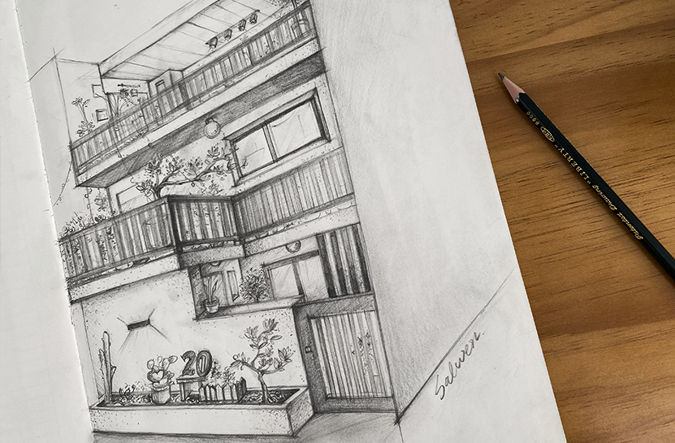
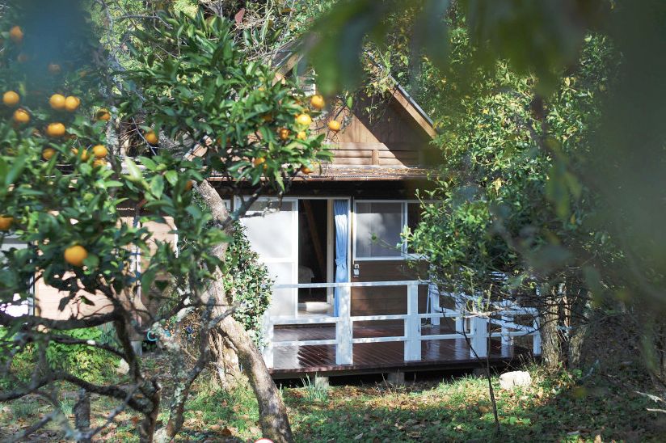

大自然を感じられるお店丘むらの里

| 住所 | 千葉県市原市菅野425番地 |
|---|---|
| 営業時間 | ・レストラン棟：土日、祝日 ・宿泊棟：一日人組限定でログハウス、古民家をご案内します。 |
| ウェブサイト | https://villageokamura.localinfo.jp |
東京から車で45分。高速を抜け、だんだんと見えてくる広い青空と里山風景。『こんな場所に、本当にレストランなんてあるの？』
そんな山の中にある、見晴らしのいい丘の上に“丘むらの里”はあります。
ここでは地元の農家さんが大切に育てている自然薯と季節の食材を使った定食が食べられるほか、母屋やログハウスなどいくつかの宿泊塔が陽のあたる丘に立っています。もともと実家があり、お母様が地元の方向けにやっていた定食屋さんを改装して、“丘むらの里”として、改めてスタートさせました。
ずっとここで生まれ育ったというオーナーの岡村さんは、すっかり静かになってしまったこの場所で『昔のように子どもたちが自然を当たり前に感じながら遊べる居場所をつくりたい。』そんな強い思いをも持って定年退職後、心機一転、カフェの資格をとって始めたそうです。

長年IT系の営業の仕事をやっていたこともあり、「縁は自分でつくるもの」だと岡村さん。そのお言葉通り、定食屋さんをスタートさせてから、宿として泊まれるようにして県外からのお客様を受け入れ始めたり、野菜のつくり方を知らない子どもたちも気軽に参加できるように畑を耕したり、
地元の作家さんが作品を展示できるようにと新たに場をつくったり、と色々な活動を始めながら外から来る方とのご縁をつくっています。

『全然やったことのないことばかりですが、今まで出会ったことのない方達と出会えるのがとても楽しいんですよ。』
エプロン姿で自然薯をかき混ぜながら笑顔でそう話してくれる岡村さんのその姿はすっかりと定食屋さんでした。
そんな岡村さんですが、これから餅つきや畑など、昔から当たり前に行われてきた光景を、この里に来てくれた人たちが自然を感じながら楽しめるように、現在様々な企画を予定しています。
まずは自然薯定食を食べに、ぜひ一度足を運んでみてください！
岡村さんが定食の美味しい食べ方を教えてくれたあと、きっと里の中を色々と案内をしてくれますよ！